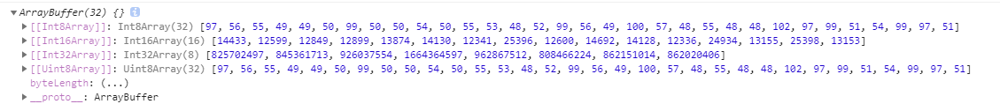
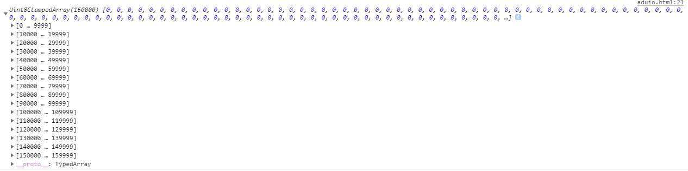

ArrayBuffer TypedArray和DataView
概述
ArrayBuffer对象、TypedArray视图和DataView视图是 JavaScript 操作二进制数据的一个接口。这些对象早就存在，属于独立的规格（2011 年 2 月发布），ES6 将它们纳入了 ECMAScript 规格，并且增加了新的方法。它们都是以数组的语法处理二进制数据，所以统称为二进制数组。
这个接口的原始设计目的，与 WebGL 项目有关。浏览器与显卡之间的大量通信都是通过二进制数据完成的，而传统的文本格式是32位整数，为了解决数据转化的效率低下问题，使得二者可以直接通过二进制进行通信，二进制数组就是在这种背景下诞生的。它很像 C 语言的数组，允许开发者以数组下标的形式，直接操作内存。
二进制数组的组成
由三类对象组成：
ArrayBuffer对象：代表内存之中的一段二进制数据，可以存放多种类型的数据。不同数据有不同的存储方式，这就叫做“视图”。可以通过“视图”进行操作。“视图”部署了数组接口，这意味着，可以用数组的方法操作内存。
TypedArray视图：共包括 9 种类型的视图，比如Uint8Array（无符号 8 位整数）数组视图, Int16Array（16 位整数）数组视图, Float32Array（32 位浮点数）数组视图等等。
DataView视图：可以自定义复合格式的视图，比如第一个字节是 Uint8（无符号 8 位整数）、第二、三个字节是 Int16（16 位整数）、第四个字节开始是 Float32（32 位浮点数）等等，此外还可以自定义字节序。
简单说，ArrayBuffer对象代表原始的二进制数据，TypedArray视图用来读写简单类型的二进制数据，DataView视图用来读写复杂类型的二进制数据
ArrayBuffer 对象
ArrayBuffer对象代表储存二进制数据的一段内存，它不能直接读写，只能通过视图（TypedArray视图和DataView视图)来读写，视图的作用是以指定格式解读二进制数据。
ArrayBuffer也是一个构造函数，可以分配一段可以存放数据的连续内存区域。

可以看到，ArrayBuffer构造函数的参数是所需要的内存大小（单位字节）。
TypedArray 视图
TypedArray视图一共包括 9 种类型，每一种视图都是一种构造函数（接受一个ArrayBuffer对象作为参数）:
- Int8Array：8 位有符号整数，长度 1 个字节。
- Uint8Array：8 位无符号整数，长度 1 个字节。
- Uint8ClampedArray：8 位无符号整数，长度 1 个字节，溢出处理不同。
- Int16Array：16 位有符号整数，长度 2 个字节。
- Uint16Array：16 位无符号整数，长度 2 个字节。
- Int32Array：32 位有符号整数，长度 4 个字节。
- Uint32Array：32 位无符号整数，长度 4 个字节。
- Float32Array：32 位浮点数，长度 4 个字节。
- Float64Array：64 位浮点数，长度 8 个字节。
这 9 个构造函数生成的数组，统称为TypedArray视图。它们很像普通数组，都有length属性，都能用方括号运算符（[]）获取单个元素，所有数组的方法，在它们上面都能使用。普通数组与 TypedArray 数组的差异主要在以下方面:
- TypedArray 数组的所有成员，都是同一种类型。
- TypedArray 数组的成员是连续的，不会有空位。
- TypedArray 数组成员的默认值为 0。比如，new Array(10)返回一个普通数组，里面没有任何成员，只是 10 个空位；new Uint8Array(10)返回一个 TypedArray 数组，里面 10 个成员都是 0。
- TypedArray 数组只是一层视图，本身不储存数据，它的数据都储存在底层的ArrayBuffer对象之中，要获取底层对象必须使用buffer属性。
譬如我们读取一个文件（文本文件）的二进制数据
document.getElementById("select-file").addEventListener("change",(e)=>{
const files=e.target.files[0];
let fileReader = new FileReader();
fileReader.readAsArrayBuffer(files)
fileReader.onload = function () {
let arrayBuffer = this.result;
console.log(arrayBuffer)
let uInt8data=new Uint8Array(arrayBuffer);
console.log(uInt8data)
console.log(uInt8data.buffer)
}
})
结果如下：

DataView 视图
DataView视图提供更多操作选项，而且支持设定字节序。本来，在设计目的上，ArrayBuffer对象的各种TypedArray视图，是用来向网卡、声卡之类的本机设备传送数据，所以使用本机的字节序就可以了；而DataView视图的设计目的，是用来处理网络设备传来的数据，所以大端字节序或小端字节序是可以自行设定的。
DataView视图支持的类型共8种，除不支持 Uint8ClampedArray 类型外，其他与TypedArray视图相同
ArrayBuffer 与字符串的互相转换
ArrayBuffer 和字符串的相互转换，使用原生 TextEncoder 和 TextDecoder 方法:
function arrayBufferToString(buffer){
const decoder = new TextDecoder('utf8')
return decoder.decode(buffer);//ArrayBuffer | Uint8Array | Int8Array | Uint16Array | Int16Array | Uint32Array | Int32Array,
}
function stringToArrayBuffer(input){
const encoder = new TextEncoder()
const view = encoder.encode(input);//string
return view.buffer;
}
我们转换上一步得到的文本文件，结果如下：

可以看到通过转换我们可以读取到文件中的内容（文本文件），而对于非utf8编码方式文件，得到的则是乱码。
对于ArrayBuffer TypedArray 和DataView 更详细的用法可以参考阮一峰的ES6教程（参考文章1）
二进制数组的应用
大量的 Web API 用到了ArrayBuffer对象和它的视图对象。
Ajax
XHR第一版，服务器通过 AJAX 操作只能返回文本数据，即responseType属性默认为text。XMLHttpRequest第二版XHR2允许服务器返回二进制数据，这时分成两种情况。如果明确知道返回的二进制数据类型，可以把返回类型（responseType）设为arraybuffer：
let xhr = new XMLHttpRequest();
xhr.open('GET', "http://minghuan-image.test.upcdn.net/test/zeus-3.0.txt");
xhr.responseType = 'arraybuffer';
xhr.onload = function () {
let arrayBuffer = xhr.response;
console.log(arrayBuffer)
};
xhr.send();
运行结果：

responseType支持以下几个参数：
- arraybuffer: ArrayBuffer对象
- blob: Blob对象
- document: Document对象
- json: JS 对象，解析得到的从服务器返回来的JSON字符串
- text: DOMString(默认)
Fetch
之前文章Fetch-and-XMLHttpRequest中有提到过：Fetch得到的Response 下共有5个方法，其中包含arrayBuffer方法，所以通过Fetch也可以得到ArrayBuffer数据:
fetch("http://minghuan-image.test.upcdn.net/test/zeus-3.0.txt").then((res)=>{
return res.arrayBuffer()
}).then((data)=>{
console.log(data)
})
运行结果：
扩展
开发中遇到一个接口上传，不同于常规接受FormData，接口只接受二进制数据，代码如下：
input表单
<input type="file" @change="handleChange">
监听变化完成上传：
handleChange (e) {
const files = e.target.files[0];
var fileReader = new FileReader();
fileReader.readAsArrayBuffer(files);
fileReader.onload = function () {
const _buffer = (this.result)
fetch("http://xxx/upload", {
body: _buffer,
method: 'POST',
}).then((res) => {
return res.json()
}).then((data) => {
console.log(data)
})
}
}
执行成功时的请求与返回截图如下:


WebSocket
WebSocket可以通过ArrayBuffer，发送或接收二进制数据。
let socket = new WebSocket('ws://127.0.0.1:8081');
socket.binaryType = 'arraybuffer';
// Wait until socket is open
socket.addEventListener('open', function (event) {
// Send binary data
const typedArray = new Uint8Array(4);
socket.send(typedArray.buffer);
});
// Receive binary data
socket.addEventListener('message', function (event) {
const arrayBuffer = event.data;
// ···
});
Canvas
网页Canvas元素输出的二进制像素数据，就是 TypedArray 数组
const canvas = document.getElementById('myCanvas');
const ctx = canvas.getContext('2d');
const imageData = ctx.getImageData(0, 0, canvas.width, canvas.height);
const uint8ClampedArray = imageData.data;
console.log(uint8ClampedArray)
运行结果：

可以看到，它的视图类型是一种针对Canvas元素的专有类型Uint8ClampedArray。这个视图类型的特点，就是专门针对颜色，把每个字节解读为无符号的 8 位整数，即只能取值 0 ～ 255，而且发生运算的时候自动过滤高位溢出。这为图像处理带来了巨大的方便。
File API
在本文第二部分涉及到的二进制数据，均为File API得到的，实际上我们读取文件后，通过内置的reader.readAsArrayBuffer方法可以轻易将文件转化为ArrayBuffer, 然后可以在此基础上做其他二进制操作。
SharedArrayBuffer 和 Atomics 对象
日常用到的不多，本文不做表述，具体可访问参考文章1
Blob对象
Blob(Binary Large Object 二进制大对象)术语最初来自数据库，早期数据库因为要存储声音、图片、以及可执行程序等二进制数据对象所以给该类对象取名为Blob。 在Web领域，Blob被定义为包含只读数据的类文件对象。Blob 表示的不一定是JavaScript原生格式的数据。File 接口基于Blob，继承了 blob 的功能并将其扩展使其支持用户系统上的文件。
构造函数
Blob() 构造函数返回一个新的 Blob 对象：
new Blob( array, options )
array 是一个由ArrayBuffer, ArrayBufferView, Blob, DOMString 等对象构成的 Array ，或者其他类似对象的混合体，它将会被放进 Blob。DOMStrings会被编码为UTF-8。
options 是一个可选的BlobPropertyBag字典，它可能会指定如下两个属性：
type，默认值为 “”，它代表了将会被放入到blob中的数组内容的MIME类型。
endings，默认值为”transparent”，用于指定包含行结束符\n的字符串如何被写入。它是以下两个值中的一个：”native”，代表行结束符会被更改为适合宿主操作系统文件系统的换行符，或者 “transparent”，代表会保持blob中保存的结束符不变。var debug = {hello: "world"}; var blob = new Blob([JSON.stringify(debug, null, 2)], {type : 'application/json'}); console.log(blob)
我们也可以将本地选取的音频，直接转化为url在页面中播放
input表单与audio控件
<input type="file" @change="handleChange">
<audio :src="blobUrl" controls="controls"></audio>
方式一：通过FileReader读取文件，获取文件二进制数据，传入Blob对象，创建blob实例，创建URL：
handleChange (e) {
const target=e.target.files[0]
const fileReader = new FileReader();
fileReader.readAsArrayBuffer(target);
fileReader.onload = () => {
const arrayBuffer = fileReader.result;
const unit8=new Uint8Array(arrayBuffer)
let _blob = new Blob([unit8],{
type: 'audio/mp3'
})
this.blobUrl = URL.createObjectURL(_blob);
}
}
方式二：直接将文件传入URL.createObjectURL中,生成URL
handleChange (e) {
const target=e.target.files[0]
this.blobUrl = URL.createObjectURL(target);
}

File对象
文件（File）接口提供有关文件的信息，并允许网页中的 JavaScript 访问其内容。
通常情况下， File 对象是来自用户在一个 <input> 元素上选择文件后返回的 FileList 对象,也可以是来自由拖放操作生成的 DataTransfer 对象，或者来自 HTMLCanvasElement 上的 mozGetAsFile() API。在Gecko中，特权代码可以创建代表任何本地文件的File对象，而无需用户交互。
File 对象是特殊类型的 Blob，且可以用在任意的 Blob 类型的 context 中：比如说，
- FileReader()
- URL.createObjectURL()
- createImageBitmap()
- XMLHttpRequest.send()
都可以接收 Blob 或 File 对象来进行对应处理。
从Blob中读取内容的唯一方法是使用 FileReader(具体使用参照5.1介绍):
var reader = new FileReader();
reader.readAsArrayBuffer(blob);
reader.onload = function (e) {
let arrayBuffer = e.target.result;
console.log(arrayBuffer)
}
运行结果：

FileReader
FileReader对象允许Web应用程序异步读取存储在用户计算机上的文件（或原始数据缓冲区）的内容，使用 File 或 Blob 对象指定要读取的文件或数据。
它有一下几个方法：
- FileReader.abort()：中止读取操作。在返回时，readyState属性为DONE。
- FileReader.readAsArrayBuffer()：开始读取指定的 Blob中的内容, 一旦完成, result 属性中保存的将是被读取文件的 ArrayBuffer 数据对象.
- FileReader.readAsBinaryString()：开始读取指定的Blob中的内容。一旦完成，result属性中将包含所读取文件的原始二进制数据。
- FileReader.readAsDataURL()：开始读取指定的Blob中的内容。一旦完成，result属性中将包含一个data: URL格式的字符串以表示所读取文件的内容。
- FileReader.readAsText()：开始读取指定的Blob中的内容。一旦完成，result属性中将包含一个字符串以表示所读取的文件内容。
URL.createObjectURL
URL.createObjectURL() 静态方法会创建一个 DOMString，其中包含一个表示参数中给出的对象的URL，该对象表示指定的 File 对象或 Blob 对象。
得到的URL字符串可以用在html的任何可以使用url的地方，比如img的src ; audio/video的src和source标签等。